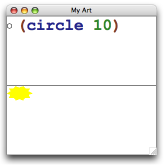

Quick: An Introduction to Racket with Pictures
This tutorial provides a brief introduction to the Racket programming language by using one of its picture-drawing libraries. Even if you don’t intend to use Racket for your artistic endeavours, the picture library supports interesting and enlightening examples. After all, a picture is worth five hundred “hello world”s.
Along the same lines, we assume that you will run the examples using DrRacket. Using DrRacket is the fastest way to get a sense of what the language and system feels like, even if you eventually use Racket with Emacs, vi, or some other editor.
1 Ready...
Download Racket, install, and then start DrRacket.
2 Set...
See the DrRacket documentation for a brief overview of the DrRacket IDE.
Then click the Run button. You’ll see the text caret move to the bottom text area, which is the interactions area.
If you’ve used DrRacket before, you might need to reset DrRacket to use the language declared in the source via the Language|Choose Language... menu item before clicking Run.
3 Go!
When you type an expression after the > in the interactions window and hit Enter, DrRacket evaluates the expression and prints its result. An expression can be just a value, such as the number 5 or the string "art gallery":
> 5 5
> "art gallery" "art gallery"
An expression can also be a function call. To call a function, put an open parenthesis before the function name, then expressions for the function arguments, and then a close parenthesis, like this:
> (circle 10)
A result from the circle function is a picture value, which prints as an expression result in much the same way that numbers or strings print. The argument to circle determines the circle’s size in pixels. As you might guess, there’s a rectangle function that takes two arguments instead of one:
> (rectangle 10 20)
Try giving circle the wrong number of arguments, just to see what happens:
> (circle 10 20) circle: arity mismatch;
the expected number of arguments does not match the given
number
expected: 1 plus optional arguments with keywords
#:border-color and #:border-width
given: 2
arguments...:
10
20
Note that DrRacket highlights in pink the expression that triggered the error (but pink highlighting is not shown in this documentation).
In addition to basic picture constructors like circle and rectangle, there’s a hc-append function that combines pictures. When you start composing function calls in Racket, it looks like this:
> (hc-append (circle 10) (rectangle 10 20))
The hyphen in the name hc-append is just a part of the identifier; it’s not hc minus append. The function name starts with h because it combines pictures horizontally, and the next letter is c because the pictures are centered vertically.
If you wonder what other functions exist—
If you’re reading this in HTML form, you can also just click on hc-append or any other imported identifier that is used in this tutorial.
4 Definitions
To use a particular circle and rectangle picture many times, it’s simpler to give them names. Move back to the definitions area (the top area) and add two definitions, so that the complete content of the definitions area looks like this:
#lang slideshow (define c (circle 10)) (define r (rectangle 10 20))
Then click Run again. Now, you can just type c or r:
> r > (hc-append c r)
> (hc-append 20 c r c)
As you can see, the hc-append function accepts an optional number argument before the picture arguments, and it accepts any number of picture arguments. When a number is provided, it specifies the amount of space to add between pictures.
We could have evaluated the define forms for c and
r in the interactions area instead of the definitions
area. In practice, though, the definitions area is where your program
lives—
Let’s add a function definition to the program. A function definition uses define, just like our shape definitions, but with an open parenthesis before the function name, and names for the function arguments before the matching close parenthesis:
(define (square n) ; A semi-colon starts a line comment. ; The expression below is the function body. (filled-rectangle n n))
The syntax of the definition mirrors the syntax of a function call:
> (square 10)
In the same way that definitions can be evaluated in the interactions area, expressions can be included in the definitions area. When a program is run, expression results from the definition area are shown in the interaction area. From now on, we’ll write our example definitions and expressions together, and you can put them in whichever area you prefer. The examples will build on each other, however, so it’s best to put at least the definitions in the definition area.
5 Local Binding
The define form can be used in some places to create local bindings. For example, it can be used inside a function body:
(define (four p) (define two-p (hc-append p p)) (vc-append two-p two-p))
> (four (circle 10))
More typically, Racketeers use the let or let* form for local binding. An advantage of let is that it can be used in any expression position. Also, it binds many identifiers at once, instead of requiring a separate define for each identifier:
(define (checker p1 p2) (let ([p12 (hc-append p1 p2)] [p21 (hc-append p2 p1)]) (vc-append p12 p21)))
> (checker (colorize (square 10) "red") (colorize (square 10) "black"))
A let form binds many identifiers at the same time, so the bindings cannot refer to each other. The let* form, in contrast, allows later bindings to use earlier bindings:
(define (checkerboard p) (let* ([rp (colorize p "red")] [bp (colorize p "black")] [c (checker rp bp)] [c4 (four c)]) (four c4)))
> (checkerboard (square 10))

6 Functions are Values
Instead of calling circle as a function, try evaluating just circle as an expression:
> circle #<procedure:circle>
That is, the identifier circle is bound to a function (a.k.a. “procedure”), just like c is bound to a circle. Unlike a circle picture, there’s not a simple way of completely printing the function, so DrRacket just prints #<procedure:circle>.
This example shows that functions are values, just like numbers and pictures (even if they don’t print as nicely). Since functions are values, you can define functions that accept other functions as arguments:
(define (series mk) (hc-append 4 (mk 5) (mk 10) (mk 20)))
> (series circle) > (series square)
When calling a function that accepts a function argument, the argument function often isn’t needed anywhere else. Having to write down the function via define would be a hassle, because you have to make up a name and find a place to put the function definition. The alternative is to use lambda, which creates an anonymous function:
> (series (lambda (size) (checkerboard (square size))))

The parenthesized names after a lambda are the arguments to the function, and the expression after the argument names is the function body. Using the word “lambda” instead of “function” or “procedure” is part of Racket’s history and culture.
A define form for a function is really a shorthand for a simple define using lambda as the value. For example, the series definition could be written as
(define series (lambda (mk) (hc-append 4 (mk 5) (mk 10) (mk 20))))
Most Racketeers prefer to use the shorthand function form with define instead of expanding to lambda.
7 Lexical Scope
Racket is a lexically scoped language, which means that whenever an identifier is used as an expression, something in the textual environment of the expression determines the identifier’s binding. This rule applies to identifiers in a lambda body as well as anywhere else.
In the following rgb-series function, the uses of mk in each lambda form refer to the argument of rgb-series, since that’s the binding that is textually in scope:
(define (rgb-series mk) (vc-append (series (lambda (sz) (colorize (mk sz) "red"))) (series (lambda (sz) (colorize (mk sz) "green"))) (series (lambda (sz) (colorize (mk sz) "blue")))))
> (rgb-series circle) > (rgb-series square)
Here’s another example, where rgb-maker takes a function and returns a new one that remembers and uses the original function.
(define (rgb-maker mk) (lambda (sz) (vc-append (colorize (mk sz) "red") (colorize (mk sz) "green") (colorize (mk sz) "blue"))))
> (series (rgb-maker circle))
> (series (rgb-maker square))
Note how composing functions via rgb-maker creates a different alignment of objects within the picture compared to using rgb-series.
8 Lists
Racket inherits much of its style from the language Lisp, whose name originally stood for “LISt Processor,” and lists remain an important part of Racket.
The list function takes any number of arguments and returns a list containing the given values:
> (list "red" "green" "blue") '("red" "green" "blue")
> (list (circle 10) (square 10)) '(

)
As you can see, a list prints as a single quote and then pair of parentheses wrapped around the printed form of the list elements. There’s room for confusion here, because parentheses are used for both expressions, such as (circle 10), and printed results, such as '("red" "green" "blue"). The quote is the key difference, as discussed elsewhere. To help emphasize the difference, in the documentation and in DrRacket, result parentheses are printed in blue, unlike expression parentheses.
If you have a list, then you’ll eventually want to do something with each of the elements. The map function takes a list and a function to apply to each element of the list; it returns a new list to combine the function’s results:
(define (rainbow p) (map (lambda (color) (colorize p color)) (list "red" "orange" "yellow" "green" "blue" "purple")))
> (rainbow (square 5)) '(


)
Another function that works with lists is apply. Like map, it takes a function and a list, but a function given to apply should take all of the arguments at once, instead of each one individually. The apply function is especially useful with functions that take any number of arguments, such as vc-append:
> (apply vc-append (rainbow (square 5)))
Note that (vc-append (rainbow (square 5))) would not work, because vc-append does not want a list as an argument; it wants a picture as an argument, and it is willing to accept any number of them. The apply function bridges the gap between a function that wants many arguments and a list of those arguments as a single value.
9 Modules
Since your program in the definitions window starts with
all of the code that you put in the definitions window is inside a module. Furthermore, the module initially imports everything from the module designated by slideshow, which exports picture-making functions as well as more commonly used functions such as list and map.
To import additional libraries, use the require form. For example, the library pict/flash provides a filled-flash function:
(require pict/flash)
> (filled-flash 40 30)

Modules are named and distributed in various ways:
Some modules are packaged in the Racket distribution or otherwise installed into a hierarchy of collections. For example, the module name pict/flash means “the module implemented in the file "flash.rkt" that is located in the "pict" collection.” When a module name includes no slash, then it refers to a "main.rkt" file.
Some collections of modules are distributed as packages. Packages can be installed using the Install Package... menu item in DrRacket’s File menu, or they can be installed using the raco pkg command-line tool. For example, installing the "avl" package makes the avl module available.
Packages can be registered at https://pkgs.racket-lang.org/, or they can be installed directly from a Git repository, web site, file, or directory. See Package Management in Racket for more information about packages.
To save your definitions, use DrRacket’s Save Definitions menu item.
Some modules live relative to other modules, without necessarily belonging to any particular collection or package. For example, in DrRacket, if you save your definitions so far in a file "quick.rkt" and add the line(provide rainbow square)
then you can open a new tab or window in DrRacket, type the new program "use.rkt" in the same directory as "quick.rkt":
#lang racket (require "quick.rkt") (rainbow (square 5)) and when you run "use.rkt", a rainbow list of squares is the output. Note that "use.rkt" is written using the initial import racket, which does not supply any picture-making functions itself—
but does provide require and the function-calling syntax.
Racketeers typically write new programs and libraries as modules that import each other through relative paths and collection-based paths. When a program or library developed this way seems useful to others, it can be registered as a package, especially if the implementation is hosted in a Git repository.
10 Macros
Here’s another library to try:
(require slideshow/code)
> (code (circle 10))
Instead of a circle, the result is a picture of the code that, if it were used as an expression, would produce a circle. In other words, code is not a function, but instead a new syntactic form for creating pictures; the bit between the opening parenthesis with code is not an expression, but instead manipulated by the code syntactic form.
This helps explain what we meant in the previous section when we said that racket provides require and the function-calling syntax. Libraries are not restricted to exporting values, such as functions; they can also define new syntactic forms. In this sense, Racket isn’t exactly a language at all; it’s more of an idea for how to structure a language so that you can extend it or create entirely new languages.
One way to introduce a new syntactic form is through define-syntax with syntax-rules:
(define-syntax pict+code (syntax-rules () [(pict+code expr) (hc-append 10 expr (code expr))]))
> (pict+code (circle 10))
This kind of definition is a macro. The (pict+code expr) part is a pattern for uses of the macro; instances of the pattern in a program are replaced by instances of the corresponding template, which is (hc-append 10 expr (code expr)). In particular, (pict+code (circle 10)) matches the pattern with (circle 10) as expr, so it is replaced with (hc-append 10 (circle 10) (code (circle 10))).
Of course, this sort of syntactic extension cuts both ways: inventing a new language can make it easier to say what you want, but harder for others to understand. As it happens, the developers of Racket are constantly giving talks and writing papers that involve Racket code, and it’s worthwhile for everyone who works on those products to know about code.
In fact, you might want to take a look at the source of this document. You’ll see that it starts with #lang, but otherwise doesn’t look a lot like Racket; nevertheless, we build this document by running its source as a Racket program. We have to use a lot more than syntax-rules to extend Racket’s syntax enough for writing documents, but Racket’s syntactic extension can take you a long way.
11 Objects
An object system is another example of a sophisticated language extension that is worth learning and using for Racket users. Objects are sometimes better than functions, even when you have lambda, and objects work especially well for graphical user interfaces. The API for Racket’s GUI and graphics system is expressed in terms of objects and classes.
The class system itself is implemented by the racket/class library, and the racket/gui/base library provides the GUI and drawing classes. By convention, the classes are given names that end with %:
(require racket/class racket/gui/base) (define f (new frame% [label "My Art"] [width 300] [height 300] [alignment '(center center)]))
> (send f show #t)
The new form creates an instance of a class, where initialization arguments like label and width are provided by name. The send form calls a method of the object, such as show, with arguments after the method name; the argument #t in this case is the boolean constant “true.”
Pictures generated with slideshow encapsulate a function that uses the graphics toolbox’s drawing commands to render the picture to a drawing context, such as a canvas in a frame. The make-pict-drawer function from slideshow exposes a picture’s drawing function. We can use make-pict-drawer in a canvas-painting callback to draw a picture into a canvas:
(define (add-drawing p) (let ([drawer (make-pict-drawer p)]) (new canvas% [parent f] [style '(border)] [paint-callback (lambda (self dc) (drawer dc 0 0))])))
> (add-drawing (pict+code (circle 10))) #(struct:object:canvas% ...)
> (add-drawing (colorize (filled-flash 50 30) "yellow")) #(struct:object:canvas% ...)

Each canvas stretches to fill an equal portion of the frame, because that’s how a frame manages its children by default.
12 Where to Go From Here
This introduction to Racket purposely avoids many of the traditional ways of introducing and distinguishing Lisp or Scheme: prefix arithmetic notation, symbols, quoting and quasiquoting lists, eval, first-class continuations, and the idea that all syntax is really just a lambda in disguise. While those are all part of Racket, they are not the main ingredients of day-to-day programming in Racket.
Instead, Racket programmers typically program with functions,
records, objects, exceptions, regular expressions, modules, and
threads. That is, instead of a “minimalist” language—
If you are new to programming or if you have the patience to work through a textbook, we recommend reading How to Design Programs. If you have already read it, or if you want to see where the book will take you, then see Continue: Web Applications in Racket.
For experienced programmers, to continue touring Racket from a systems-oriented perspective instead of pictures, your next stop is More: Systems Programming with Racket.
To instead start learning about the full Racket language and tools in depth, move on to Racket 指南.